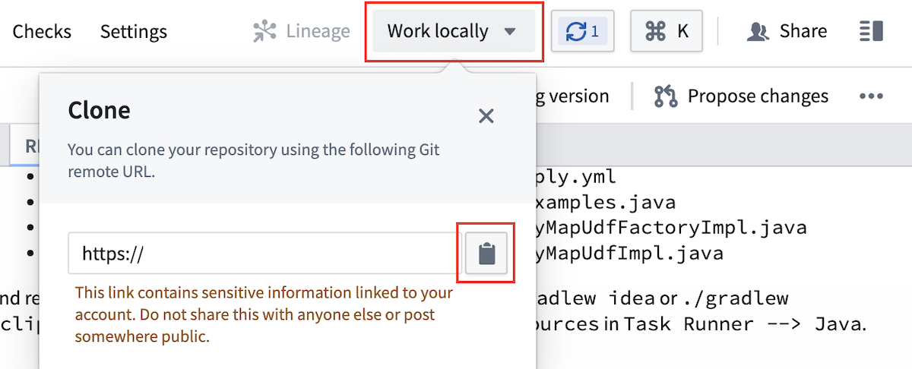
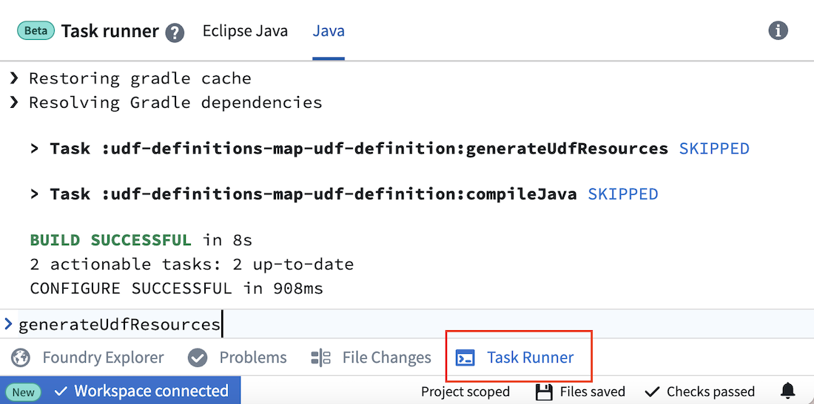
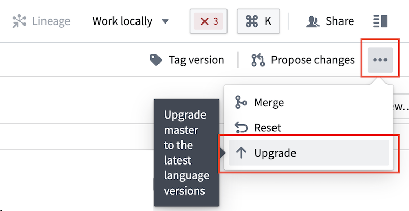

:::callout{theme="neutral"} Pipeline Builder supports both Java and Python user-defined functions (UDFs). Learn more about using Python UDFs in Pipeline Builder. :::
If you cannot manipulate your data with existing transformation options in Pipeline Builder, want to incorporate external Java or Python libraries, or have complex logic you want to reuse across pipelines, you can create your own user-defined function (UDF). User-defined functions let you run your own arbitrary Java or Python code in Pipeline Builder or in Code Repositories that can be versioned and upgraded.
:::callout{theme="warning"} User-defined functions should only be applied when necessary, and we recommend using existing transformations in Pipeline Builder or Java transform repositories when possible.
Enrollments must be on Palantir's cloud-hosted infrastructure to use UDFs. Row map, flat map, keyed process, and keyed co-process UDFs are currently supported in Pipeline Builder; async UDFs are not yet supported. User-defined functions are an advanced feature. Be sure to thoroughly review the following documentation to understand the impact of using user-defined functions in your pipeline. :::
To create a user-defined function repository, first navigate to a Project where you would like to save the repository.
Then, select New and choose Code Repository. Under the Foundry UDF Definitions option, select Map UDF Definition/Implementation to bootstrap your repository with a UDF template. Finally, select Initialize repository.
You can choose to work locally with your own local environment (recommended) or directly in Code Repositories.
We recommend working locally to create UDFs. Follow the steps below to set up your local environment.

Open your command line interface (CLI) and run git clone <repo url>.
Open the project in your developer environment with the following commands:
./gradlew idea open./gradlew eclipse openKey CLI commands:
./gradlew idea./gradlew eclipse../gradlew generateEddieLockfile./gradlew test --tests examples.ExamplesTest.testExamples./gradlew testIf you are unable to work in your local IDE, you can edit files directly in Code Repositories and run the key commands in Task Runner.

Key commands:
generateUdfResourcesgenerateEddieLockfiletestUDFs are defined in a file that specifies its name, input schema, output schema, and argument types. Java classes will be generated based on this file, and the file name will be visible in Pipeline Builder once you publish.
To create a new UDF, add a file called <YourUdfName>.yml under src/main/resources/udfs/definitions/ with the following fields:
name: The name for the UDF that will be used by code generation to create classes describing its inputs, outputs, and arguments. This name will also be used to refer to this UDF in the deployment.yml file of the deployment repository and is visible as a transform in Pipeline Builder.customTypes (optional): A block to define custom types that can be reused throughout the inputSchema and outputSchema definitions. See the Custom types section below for details.inputSchema: The schema to which input rows must adhere to run against the UDF. Datasets with more columns than this schema are accepted if the runtime can select into this schema. Code generation will create strongly-typed input objects against this schema. Parameters will be visible in Pipeline Builder. See the schema definition section below for details.outputSchema: The schema for rows output by this UDF. Code generation will create strongly-typed output objects against this schema. See the schema definition section below for details.arguments: A description of parameters for the UDF. These arguments will be specified by a user at build time in Pipeline Builder or a corresponding deployment repository. Code generation will create a strongly-typed arguments object against this definition.An example definition is provided in your repository template under src/main/resources/udfs/definitions/Multiply.yml. Read more about arguments in the UDF definition section below.
You can define multiple UDFs in this repository by adding another definition file in src/main/resources/udfs/definitions.
Once you create or edit your UDF definition file, run code generation with the commands below. Code generation will create strongly-typed objects from your definition file and place them in udf-definitions-map-udf-definition/build/generated/sources/udf/main/java. The generated classes include input and output objects that match your definition's schema as well as interfaces to implement for your transformation creation and logic. You should also re-run code generation any time you make changes to your YourUdfNameMapUdfFactoryImpl or YourUdfNameMapUdfImpl classes so it can compile your Java package and provide errors if checks do not pass.
Local environment:
./gradlew idea./gradlew eclipseCode Repositories:
generateUdfResources in the Java Task Runner. Generated files are not visible in Code Repositories, but this command provides code completion.Row map UDFs take one row as input, then output exactly one row per input. Row map is the default UDF type.
To implement your UDF creation and transformation logic, create two new Java class files under src/main/resources/java/myprojectwith the following:
YourUdfNameMapUdfFactoryImpl.java: Responsible for creating an instance of the UDF and providing it any parameters for execution.YourUdfNameMapUdfFactory interface.args.config() parameter.create method will be invoked once at runtime to instantiate the UDF.YourUdfNameMapUdfImpl.java: Implements the actual transformation logic from the input object to the output object.YourUdfNameMapUdf interface.argument_one will have a matching method of argumentOne().The repository template includes example implementations of the Java classes listed below. You can use these examples to model your own implementations. Re-run code generation after editing to ensure there are no issues.
src/main/java/myproject/MultiplyMapUdfFactoryImpl.javasrc/main/java/myproject/MultiplyMapUdfImpl.javaFlat map UDFs take one row as input and can output 0, 1, or many rows per input.
To implement your flat map UDF creation and transformation logic, create two new Java class files under src/main/resources/java/myproject using the examples below.
YourUdfNameFlatMapUdfFactoryImpl.java: Responsible for creating an instance of the UDF and providing it parameters for execution.
YourUdfNameFlatMapUdfFactory interface.args.config() parameter.create method will be invoked once at runtime to instantiate the UDF.Example: DuplicateRowsFlatMapUdfFactoryImpl.java
package myproject;
import com.google.auto.service.AutoService;
import com.palantir.foundry.duplicaterows.config.DuplicateRowsConfiguration;
import com.palantir.foundry.duplicaterows.DuplicateRowsFlatMapUdf;
import com.palantir.foundry.duplicaterows.DuplicateRowsFlatMapUdfAdapter;
import com.palantir.foundry.duplicaterows.DuplicateRowsFlatMapUdfFactory;
import com.palantir.foundry.udf.api.flatmap.FoundryRowFlatMapUdf;
import com.palantir.foundry.udf.api.flatmap.FoundryRowFlatMapUdfFactory;
/**
* Factory for creating the "ChangeMe" UDF.
*/
@AutoService(FoundryRowFlatMapUdfFactory.class)
public final class DuplicateRowsFlatMapUdfFactoryImpl implements DuplicateRowsFlatMapUdfFactory {
/**
* Service-loading at runtime requires a public, no-arg constructor.
*/
public DuplicateRowsFlatMapUdfFactoryImpl() {}
/**
* Creates the UDF implementation to use at runtime. Authors should return the adapter wrapping their UDF implementation.
*/
@Override
public final FoundryRowFlatMapUdf create(FoundryRowFlatMapUdfFactory.Arguments<DuplicateRowsConfiguration> args) {
DuplicateRowsFlatMapUdf impl = new DuplicateRowsFlatMapUdfImpl(args.config());
return new DuplicateRowsFlatMapUdfAdapter(impl);
}
}
YourUdfNameFlatMapUdfImpl.java: Implements the actual transformation logic from the input object to the output object.
YourUdfNameFlatMapUdf interface.argument_one will have a matching method of argumentOne().Example: DuplicateRowsFlatMapUdfImpl.java
package myproject;
import com.palantir.foundry.duplicaterows.config.DuplicateRowsConfiguration;
import com.palantir.foundry.duplicaterows.DuplicateRowsFlatMapUdf;
import com.palantir.foundry.duplicaterows.input.InputRow;
import com.palantir.foundry.duplicaterows.output.OutputRow;
import com.palantir.foundry.udf.api.flatmap.Collector;
/**
* Implementation for the "DuplicateRows" UDF logic.
*/
public final class DuplicateRowsFlatMapUdfImpl implements DuplicateRowsFlatMapUdf {
private final DuplicateRowsConfiguration config;
public DuplicateRowsFlatMapUdfImpl(DuplicateRowsConfiguration config) {
this.config = config;
}
@Override
public void flatMap(Context ctx, InputRow input, Collector<OutputRow> out) throws Exception {
OutputRow outputRow = OutputRow.create(ctx.getRowBuilderFactory())
.key(input.key())
.value(input.value());
// Duplicate all input rows by collecting twice
out.collect(outputRow);
out.collect(outputRow);
}
}
Examples provide information on a given user-defined function and can be used as a unit testing framework. These examples also appear in Pipeline Builder when importing a UDF into a pipeline, making it easier to understand UDF functionality. Only row map user defined functions are supported by the Examples framework, for flat map user defined functions we recommend writing your own JUnit tests, these will not be visible in the Builder transform documentation.
Defining an Example test case is optional but it is strongly recommended as it will be visible in Pipeline Builder, under the transform documentation, making it a lot easier for users to understand what the UDF does. If you do not want to include an Example, delete the folder src/test and continue on to the next section.
You can find a sample Examples class in the default template of the Map UDF Definition/Implementation repository.
src/test/java/examples/registry/MultiplyExamples.javaTo define new examples for a UDF, create a class under examples.registry that implements the Examples interface. Refer to MultiplyExamples.java for interface expectations.
:::callout{theme="warning"}
The name() method of the examples implementation must return the same name as the UDF being tested. Otherwise, the examples will not be properly registered or published to the Pipeline Builder interface.
:::
Actual examples should be defined in the examples() method. The following is the examples() method implementation as defined in the default MultiplyExamples class:
@Override
public List<UdfExample<SettableMultiplicand, Product, MultiplyConfiguration>> examples() {
return List.of(UdfExample.<SettableMultiplicand, Product, MultiplyConfiguration>builder()
// A unique ID for this example
.id(ExampleId.of("baseCase"))
// Optional: A description of what this example represents
.description("Multiply values by 2.")
// Whether this example should have PROMINENT or DEFAULT visibility in Pipeline Builder
.visibility(ExampleVisibility.DEFAULT)
// The case that this example illustrates (base case, null case, edge case)
.category(ExampleCategory.BASE)
// The arguments to pass to the UDF that this example illustrates
.configuration(MultiplyConfiguration.builder().multiplier(2.0d).build())
// The example input rows to the UDF
.input(
SettableMultiplicand.create(ctx().getRowBuilderFactory())
.key("key")
.value(1.5d),
SettableMultiplicand.create(ctx().getRowBuilderFactory())
.key("key")
.value(3.0d))
// The example output rows (what the input rows should look like after the UDF has been called on them)
.output(
Product.create(ctx().getRowBuilderFactory()).key("key").value(3.0d),
Product.create(ctx().getRowBuilderFactory()).key("key").value(6.0d))
.build());
}
Once you define your examples, you can run all tests.
./gradlew test --tests examples.ExamplesTest.testExamples./gradlew testtest in the Java Task Runner.Running ExamplesTest.testExamples() will load implementations of Examples under the examples.registry package and check for their validity. In the case of the MultiplyExamples.examples() method shown above, it will execute the UDF on the two input rows (["key", 1.5d] and ["key", 3.0d]) using the arguments provided in configuration (multiplier = 2.0d), and verify that it results in the specified output rows (["key", 3.0d] and ["key", 6.0d]).
Once your development work is complete, be sure to commit your changes.
Local environment: Push the changes back to Foundry Code Repositories by running the following commands in order.
git add .git commit -m "<commit message>"git pushCode Repositories: Select Commit.
You can deploy a UDF through Pipeline Builder (recommended) or a standard UDF deployment repository.
:::callout{theme="warning"} Publishing to Pipeline Builder is currently available for row map, flat map, keyed process, and keyed co-process UDFs on Rubix enrollments. Async UDFs (async custom and async deployed app) are not yet supported. :::
Follow the steps below to publish your UDF to Pipeline Builder:
generateEddieLockfile to generate a file containing a unique identifier for Pipeline Builder to register each of the UDFs in your repository.:::callout{theme="warning"}
The generateEddieLockfile command returns a random unique identifier based on the UDF name. If you rename the UDF after publishing, the code will publish as a new UDF rather than overwriting the previous UDF. Similarly, if you delete and regenerate the lockfile, the UDFs will receive new unique identifiers and register as new UDFs. All versions of the UDF, including old names, new names, and new lockfiles, will appear in the pop-up window that appears when importing a UDF in Pipeline Builder.
:::
0.0.1, for example).:::callout{theme="warning"}
If a lockfile is not present, the UDF will not register to Pipeline Builder for import into a pipeline. To generate a lockfile, run generateEddieLockfile. You do not need a lockfile if you are working in Code Repositories.
:::
Add. Your UDF should appear in the Pipeline Builder transform picker and can be used like any other transform in your pipeline.To deploy new changes or fixes after the first version of your UDF, including edits to the definition YML, repeat the implementation and publishing steps above. Then, in your Pipeline Builder pipeline:
Follow the steps below to publish your UDF to Code Repositories:
To deploy new changes or fixes after the first version of your UDF, including edits to the definition YAML, repeat the implementation and publishing steps above. Then, update the tag version referenced in the deployment repository's build.gradle dependencies.
UDF definition YAML files take the following shape:
name: # (string) The name for this UDF.
customTypes: # (optional<CustomTypes>) Custom types that can be referenced within the current UDF definition. See the [Custom Types](#custom-types) section below for details.
inputSchema: # (Schema) The schema to which input rows must adhere to run against this UDF. See the [Schema YAML definition](#schema-yaml-definition-documentation) section below for details.
outputSchema: # (Schema) The schema for output rows of this UDF. See the [Schema YAML definition](#schema-yaml-definition-documentation) section below for details.
arguments: # (map<ArgumentId, Argument>) The arguments specified at build time and made available to the UDF author at deployment time.
# (ArgumentId: string) A locally-unique name for an argument.
[ArgumentId]:
required: # (Boolean) Whether this argument is required
description: # (optional<string>) A description to be displayed in Pipeline Builder to help users understand how this argument is used.
type: # (FieldType) The data type of the argument.
# Specific to Keyed Process UDFs
keyColumns: # (list<string>) Key columns for partitioning. The columns must exist in the input schema.
eventTimeColumn: # (string) The column containing event time. This column must exist in the input schema.
# Specific to all other UDF types
description: # (optional<string>) A description of this UDF to be displayed in Pipeline Builder to help users understand what this UDF is.
type: # (optional<Type>) The type of this UDF which determines how the UDF's logic will be defined and executed.
# Allowed values for Type enum:
# - DEFAULT
# - ASYNC_DEPLOYED_APP_UDF
# - ASYNC_CUSTOM_UDF
# - FLAT_MAP_UDF
:::callout{theme="warning"}
We highly recommend including the optional description fields for the UDF and its arguments, especially if the UDF will be deployed in Pipeline Builder. These descriptions can increase user understanding on what the UDF does and how changing arguments can affect the output.
:::
UDF schemas take the following shape:
name: # (string) A project-unique name for the schema that code generation will used to prefix generated objects.
description: # (optional<string>) A description for this schema that is displayed for context when using this UDF in Pipeline Builder.
fields: # (list<Field>) All the fields in this schema
- name: # (string) A locally-unique name for this field
nullable: # (boolean) Whether the value is possibly null
type: # (FieldType) The data type of this field, along with any associated metadata. For example:
type: double
double: {}
As mentioned above, we highly recommend that you include a description for each schema to help users in Pipeline Builder understand input and output expectations.
All Foundry dataset types are supported by UDF FieldTypes and take the following shapes:
# arrays
type: array
array:
elementType:
type: <FieldType>
nullable: # (boolean) Whether the array values are possibly null
# binary
type: binary
binary: {}
# boolean
type: boolean
boolean: {}
# byte
type: byte
byte: {}
# custom
type: custom
custom: # (string) The name of the custom type defined in the `customTypes` block.
# date
type: date
date: {}
# decimal
type: decimal
decimal:
precision: # (integer) An integer between 1 and 38 (inclusive).
scale: # (integer) An integer between 0 and precision (inclusive).
# double
type: double
double: {}
# float
type: float
float: {}
# integer
type: integer
integer: {}
# long
type: long
long: {}
# map
type: map
map:
keyType:
type: <FieldType>
nullable: # (boolean) Whether the map keys are possibly null
valueType:
type: <FieldType>
nullable: # (boolean) Whether the map values are possibly null
# short
type: short
short: {}
# string
type: string
string: {}
# timestamp
type: timestamp
timestamp: {}
# struct
type: struct
struct:
fields: [] # (list<Field>)
Custom types in UDFs allow for defining types that can be repeatedly referenced throughout a schema definition.
customTypes: # This block is optional and does not need to be included if no custom types are being used.
types: # Do not forget this `types` block! This block is here in case we add later support for additional fields in `customTypes`, such as `imports`.
customType: # The key should be a unique name for this custom type
# (FieldType) the data type of this custom field, along with any associated metadata. For example:
type: double
double: {}
anotherCustomType:
# define the custom type
# ...
Custom types can be defined as an alias for any field type, including primitives, arrays, maps, and structs. In general, however, custom types are most useful when defining struct types that are repeated throughout input and output schemas.
customTypes:
types:
customStruct:
type: struct
struct:
fields:
- name: "doubleField"
nullable: false
type:
type: double
double: {}
The custom type can be referenced within a schema as follows:
inputSchema:
name: "Input"
fields:
- name: "inputStruct"
nullable: false
type:
type: custom
custom: customStruct # The name of the custom type defined above
outputSchema:
name: "Output"
fields:
- name: "outputStruct"
nullable: false
type:
type: custom
custom: customStruct # The name of the custom type defined above
When a custom struct is referenced within a UDF schema as above, code generation does not create separate classes for InputStruct and OutputStruct. Instead, both input and output objects reference the same code generation class for the custom type being referenced (CustomStruct, in the example below):
public final Output map(FoundryRowMapUdf.Context ctx, Input input) {
// A no-op UDF that passes the input struct field to the output struct field
Output output = Output.create(ctx.getRowBuilderFactory());
CustomStruct inputStruct = input.inputStruct(); // Returns a `CustomStruct`
output.outputStruct(inputStruct); // Expects a `CustomStruct` arg
return output;
}
Custom structs are a major benefit of using custom types; no additional work needs to be done to convert the input code generation type into the output code generation type when they are structurally the same.
This section describes some common issues with user-defined function implementation and deployment, with steps to debug.
Usually, this is caused by an unparseable UDF definition YAML.
Follow the steps below to resolve:
Code Assist task failed pop-up.Code Assist running message at the bottom of the code editor and selecting Refresh../gradlew idea or ./gradlew eclipse commands to see errors produced to the console.Once published, UDFs cannot be unpublished from Pipeline Builder. If you delete the lockfile entry and re-run the generateEddieLockfile command on your repository, a new ID will be granted to your UDF that will cause it to surface twice in the UDFs section of the Pipeline Builder transform list.
If ./gradlew idea open or ./gradlew eclipse open fails with the error Could not open proj generic class cache for build file <build.gradle> ... Unsupported class file major version you are likely running a Java version that is incompatible with Gradle.
Follow the steps below to resolve:
./gradlew --version.export JAVA_HOME=<jdk install directory>/Contents/Home/.You should now be able to successfully run the open commands.
If you receive a Failed to start Java server error, or if you cannot run the command in Task Runner, verify the following:
